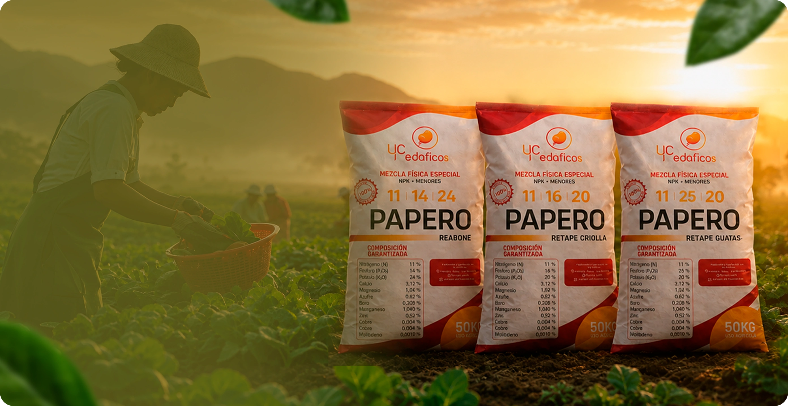
─ 01 El Desafío
01
Volatilización y lixiviación antes de que la planta lo aproveche.
02
Suelos ácidos fijan el fosforo, la raíz no puede acceder a él.
03
El follaje desvía energía del llenado del tubérculo.
04
Sin aporte progresivo, baja firmeza y mala calidad de lavado.
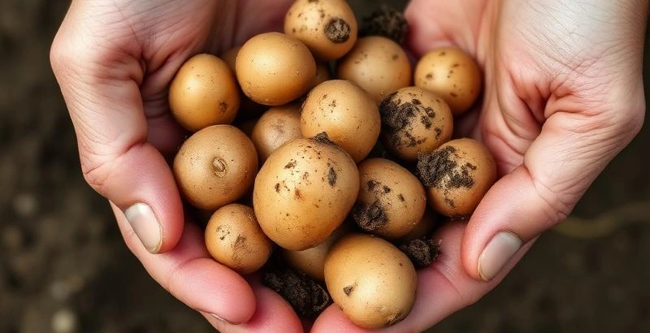
05
Su ausencia es un "freno de mano" para su cultivo. Sin estos elementos, el metabolismo se bloquea.
La escasez o deficiencia de micronutrientes (como boro, zinc, manganeso, hierro y cobre) en el cultivo de papa suele ser un problema silencioso. Aunque la planta los necesita en cantidades pequeñas, su ausencia limita drásticamente el llenado de los tubérculos y la calidad de la cosecha.
Recuerda
Un suelo fértil no garantiza una planta nutrida si los elementos se bloquean o se pierden en el ambiente.
─ 02 Presentación
Nuestra línea de fertilización no es una mezcla convencional; es el resultado de aplicar la Ciencia del Campo para crear nutrientes que minimizan las pérdidas y maximizan el rendimiento por hectárea. Diseñados específicamente para las etapas de inicio de tuberización y cultivo de papa, estos productos integran mezclas físicas especiales NPK con un paquete completo de elementos menores.
Nuestra línea de fertilización no es una mezcla convencional;
es el resultado de aplicar la
Ciencia del Campo para crear nutrientes
que minimizan las pérdidas y maximizan el
rendimiento por hectárea.
Diseñados específicamente para las etapas de inicio de
tuberización
y
cultivo de papa, estos productos integran mezclas físicas especiales
NPK con un paquete
completo de
elementos menores.
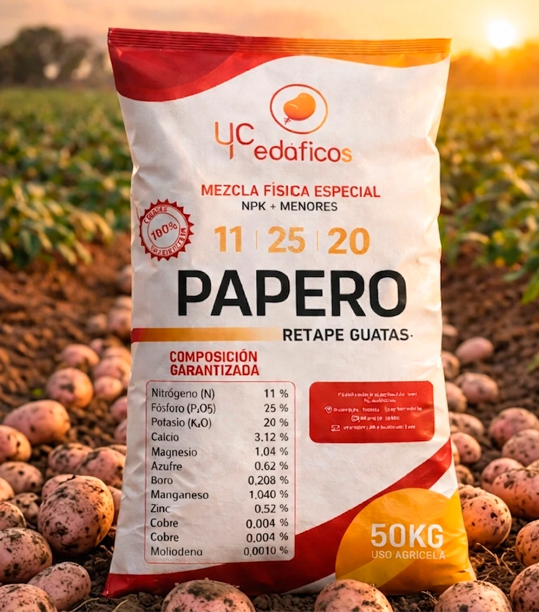
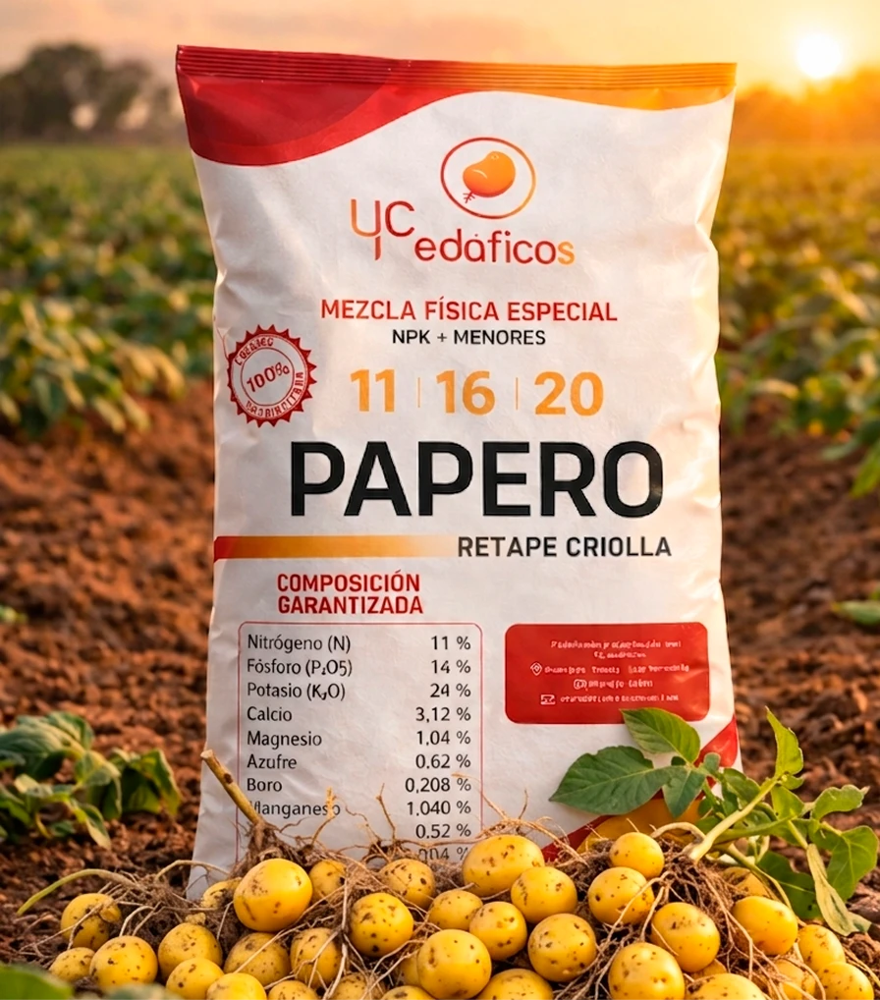
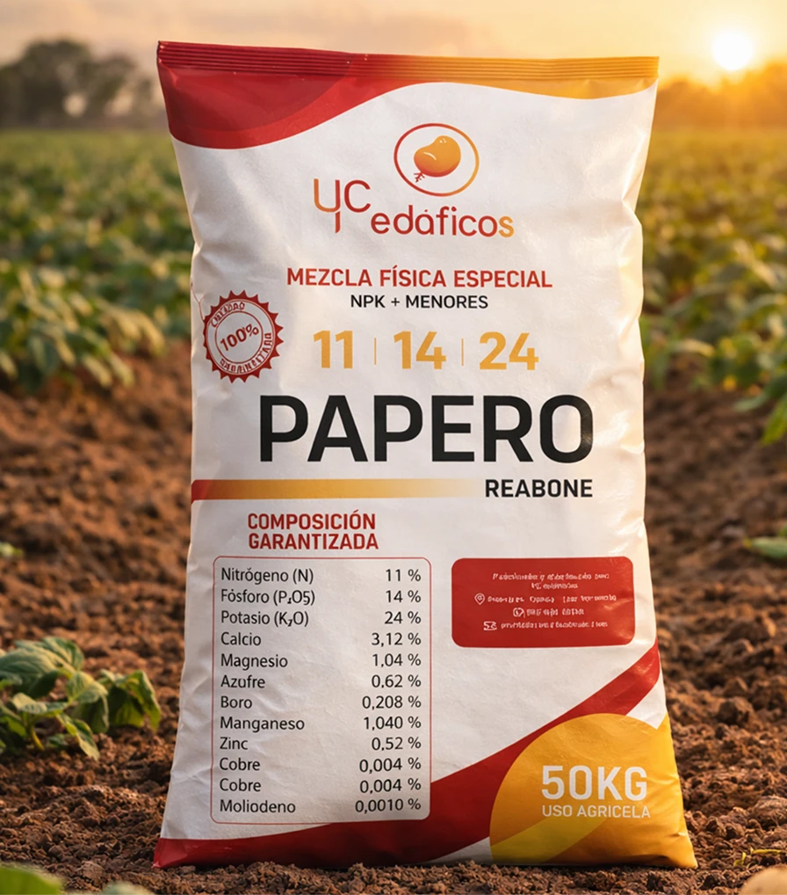
─ 03 La Solución
Eun
Estabilizador que mejora la Eficiencia de Uso del Nitrógeno.
P₂O₅
Disponibilidad radicular del fósforo en suelos ácidos críticos.
Ca
Aporte progresivo: firmeza y vida post-cosecha del tubérculo.
+
Nuestra fórmula integra un equilibrio preciso de micronutrientes esenciales (Boro, Zinc, Manganeso, Magnesio, azufre y Cobre).
─ Plan Nutricional
3 ETAPAS · 1 COSECHA
0 A 30 DÍAS
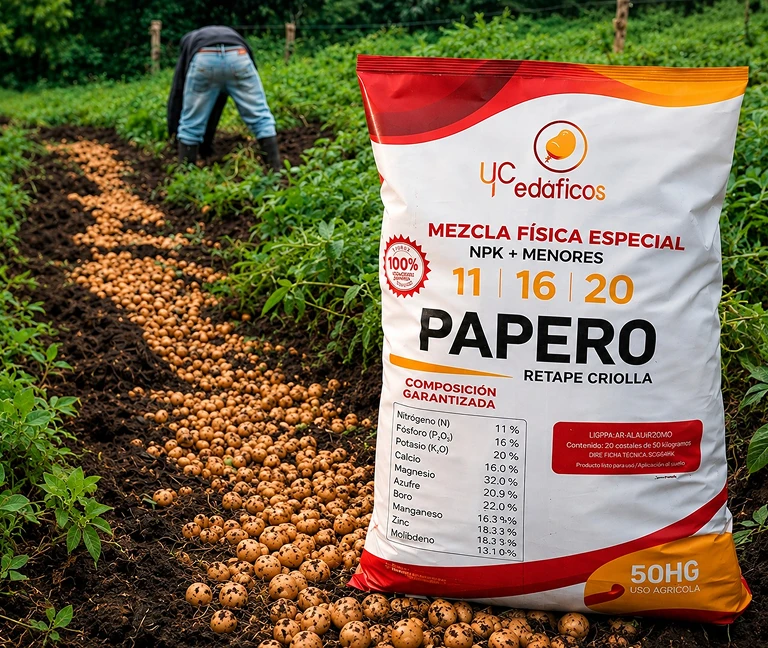
Cultivos de criolla
Único fertilizante en Colombia diseñado equilibradamente nutricional para cultivos de criolla que reduce el exceso de follaje en criolla para que cargue y engrose mas los tubérculos.
0 A 30 DÍAS
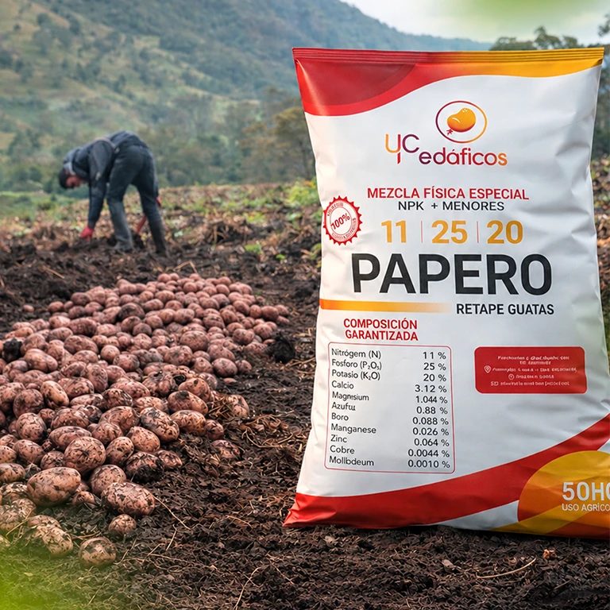
NPK · 11-25-20
Alta carga de fósforo protegido para enraizamiento.
0 A 40 DÍAS
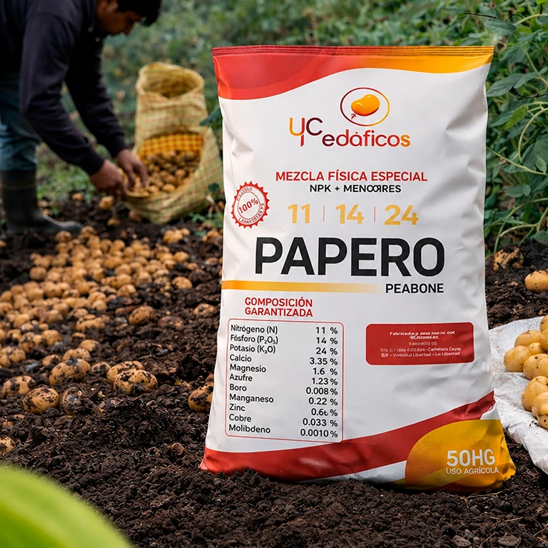
NPK · 11-14-24
Máximo potasio para engrose y firmeza final.
─ 04 Semillas
Punto de partida del éxito, pureza genérica y sanidad absoluta desde el origen, líneas de semillas de papa categoría súper élite.
Punto de partida del éxito, pureza genérica y sanidad absoluta desde
el origen, líneas de
semillas de papa categoría súper élite.
La propagación de los minitubérculos de papa de las variedades Diacol Capiro R12 y Criolla Colombia se enfoca en producir rápidamente semilla prebásica de alta pureza genética y libre de virus. Para lograrlo, se emplean métodos avanzados como el cultivo in vitro, la aeroponía o sistemas protegidos. Gracias a estas técnicas de alta calidad, ambas variedades son fundamentales y ampliamente utilizadas en Colombia para la producción comercial y la obtención de semilla certificada.
Primer eslabón en la cadena de producción de semilla certificada.
— 04 Semillas YC
Producimos mini tubérculos bajo estándares técnicos que garantizan trazabilidad, sanidad y uniformidad para un cultivo exitoso.
Fortalecemos la cadena productiva de la papa con mini tubérculos de alta calidad.
Apostamos por la innovación agrícola para las principales zonas paperas del país.
Apoyamos agricultores, semilleristas y distribuidores con materiales que mejoran el rendimiento y la sostenibilidad.
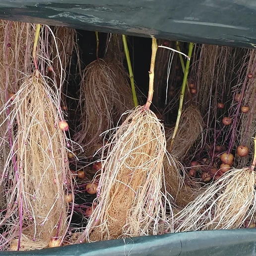
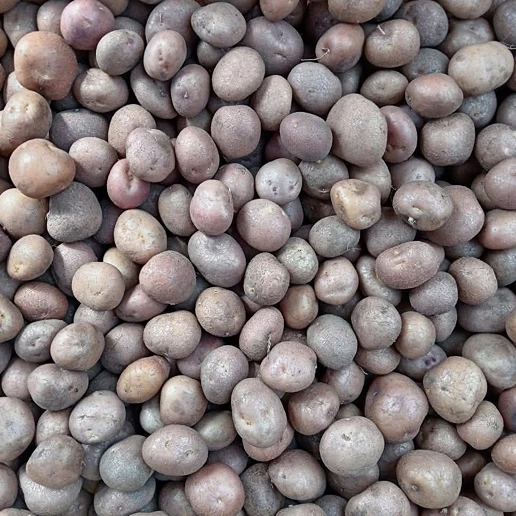
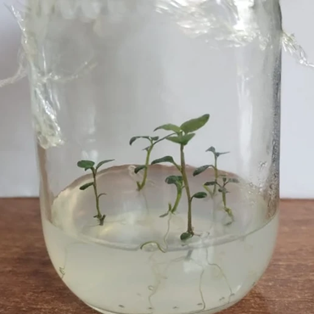
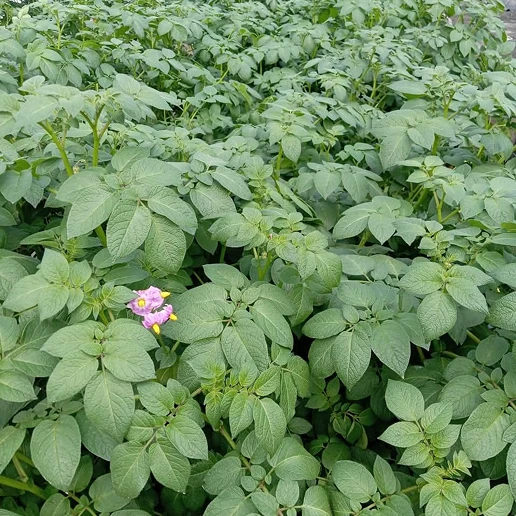
Manejo técnico del sistema
─ 05 Catálogo
Mezclas físicas NPK especiales con elementos menores. Formulados para que cada gramo aplicado se transforme en productividad real para el productor.
Mezclas físicas NPK especiales con elementos menores.
Formulados para que cada gramo
aplicado se
transforme
en productividad real para el productor.
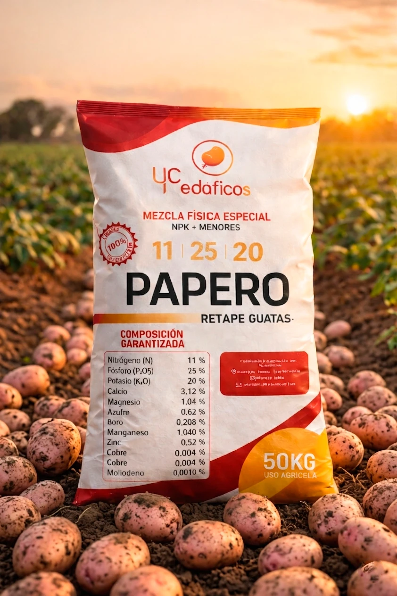
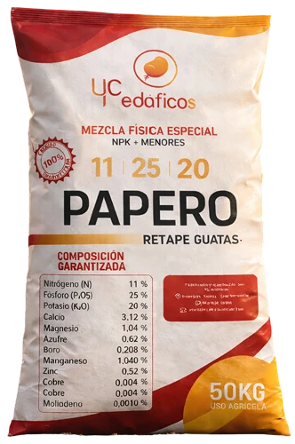
Fertilizante Granulado • + Elementos Menores
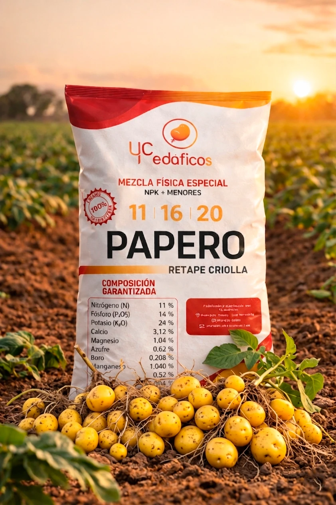
Fertilizante Granulado • + Elementos Menores
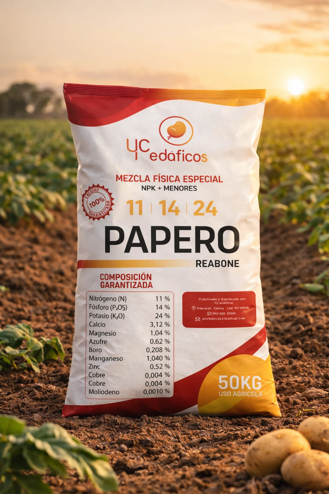
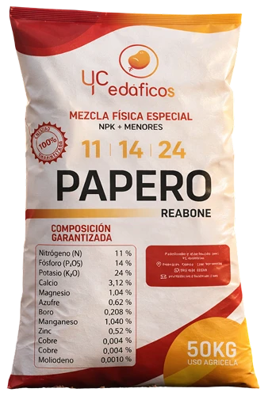
Fertilizante granulado · + Elementos Menores
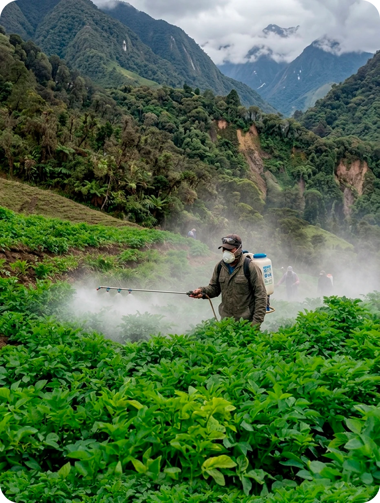
Cada hectárea merece
nutrición de precisión.
06 ¿Por qué elegirnos?
Estabilizadores que reducen lixiviación de N y protegen el P en suelos ácidos.
Punto de fabrica en Popayán, Cauca, Nariño y a nivel nacional.
Nutrición balanceada con el balance exacto de macro y micronutrientes para cada etapa del cultivo.
Capacidad de despacho nacional garantizada con nuestra flota propia de camiones y tractomulas.
Especialistas en papa con tecnología diseñada para alcanzar producciones de hasta 90 toneladas por hectárea.
Recomendaciones por análisis de suelo, lote por lote, sin costo.
─ 07 Testimonios
Productores e ingenieros agrónomos del Cauca que han visto la diferencia de aplicar la línea Papero en sus cultivos.
"Este es un testimonio de éxito. Tras 5 meses iniciamos este cultivo y la diferencia la hizo Guatas 11-25-20. Con sus tecnologías Duranitro y Durafos, el retape y el inicio de tuberización fueron un éxito. Para el llenado usamos Reabone 11-14-24. Su potasio y calcio de hidratado nos dieron papas más firmes, uniformes y con una calidad de lavado superior. Con YC Edáficos la cosecha es más rentable. Hagan el cambio hoy mismo y aseguren su inversión y haz tu pedido ahora."
Cultivo De Papa — 5 Meses De Seguimiento
GUATAS 11-25-20 + REABONE 11-14-24Andres Suarez utilizo en su cultivo 11 25 20 reabone y 11 14 24 retape guatas + elementos menores.
Andres Suarez utilizo en su
cultivo 11 25 20 reabone
y 11 14 24 retape guatas
+
elementos menores.
Jaime rosales departamento de nariño, municipio de iles vereda el comun utilizo retape guatas 11 25 20 + elementos menores
Jaime rosales departamento
de nariño, municipio de iles
vereda el comun
utilizo retape
guatas 11 25 20 + elementos
menores
─ 08 FAQ
Resolvemos sus dudas técnicas y logísticas. Si necesita más detalle, escríbanos por WhatsApp.
Resolvemos sus dudas técnicas y logísticas. Si necesita
más detalle, escríbanos por
WhatsApp.
─ 09 Síguenos
Asesoría técnica, casos de éxito y novedades de cosecha desde Nariño y Cauca. Síguenos en redes y aprende con productores reales.
Solicite su plan nutricional o cotice su pedido directamente con un asesor técnico en Popayán.